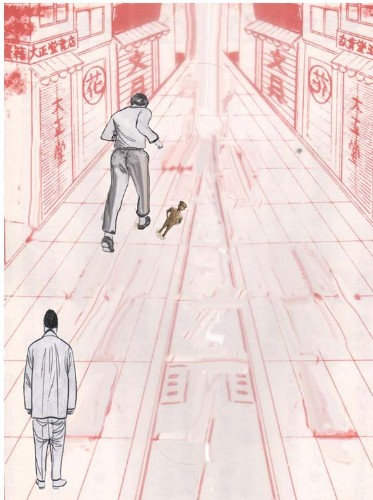

铜像的启示 江铭辉 五梦网

图:
陈万仁住在A市，他是台湾著名建筑公司老板，他正当中年，家财万贯，妻子又年轻貌美，因此，他算是一个美满幸福的人了。不料，他的妻子突然遭人杀害，凶手是他的一位年轻朋友，名叫巫添华。
陈万仁向调查警官说说:「昨夜我很晚才回家，刚巧撞上一个人，从我妻子房里跑出来，他跌跌撞撞的冲下楼梯，我借着门外的月光，一眼看出这个人是我的朋友巫添华。
巫添华立刻被逮捕，他对警官说：「我确实到他家，但与命案一点关系都没有。」
陈万仁说:「我妻子肯定是他杀的，我看他下楼跑了大约100公尺，到一个黑暗小巷，丢掉了一件东西，那东西在坚硬的水泥路上上碰撞了几下，然后滚进路旁的水沟里，在黑暗中还撞出一串火花。」
巫添华气得大叫:「这是胡说!」
警官听了，举起一座青铜像说:「对不起，巫先生，我们在深沟里找到了这件东西，要是再晚一小时，大雨也许就把这个重要线索冲掉了。铜像的底部沾的血迹和头发，是陈万仁太太的;我们也在铜像上取到一个清晰的指纹，这是您的指纹。」
巫添华反驳说:「陈万仁他打电话给我，约我八点钟到他家里谈点事情。可是他什么正经事也没说，我就走了;至于指纹，可能是我在他家拿铜像赏玩时留下的。」
这件案子各说各话，又缺乏决定性的证据，警官就暂时搁了下来，一方面又命令属下继续侦办，补强证据。
这一天，A市办案老练的局长在台北市渡完假，返回A市。
办案警官就把这件悬案报告给局长。
不料，局长看过档案以后，好奇的说:「如果档案里的资料都是正确的，这件案子早就可以宣布破案了，为什么还悬而未决呢?」
办案警官听了，问道:「你有什么证据?为什么这样说?」
局长指着陈万仁的证词，说：「很明显，陈万仁在诬陷巫添华，关键就在这个青铜像。陈万仁声称，巫添华逃跑时，丢掉的那件东西，在水泥路上撞击了几下，然后滚下水沟，还在黑暗中碰撞出一串火花，并说这是凶器。可是青铜是一种较软的金属材料，软的东西与硬的东西碰不出火花的。青铜在硬水泥路上是不会撞击出火花的。可见陈万仁根本就是在说谎，你们如果不信，可以到现场实际试一试，这尊青铜像，可以为巫添华无罪作证!」
办案的警官听了，恍然大悟，于是对此案重新审查取证，最后终于查明：
陈万仁怀疑妻子跟巫添华有私情，因此他杀了妻子，又嫁祸给巫添华，结果，害人不成，反而害了自己。